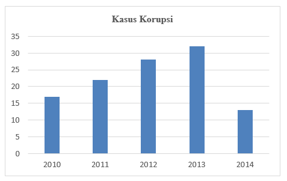
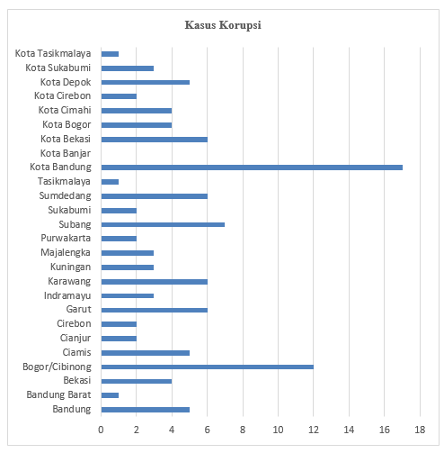
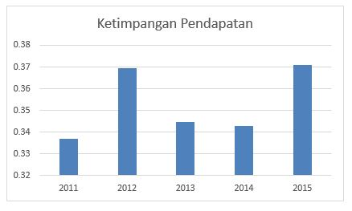
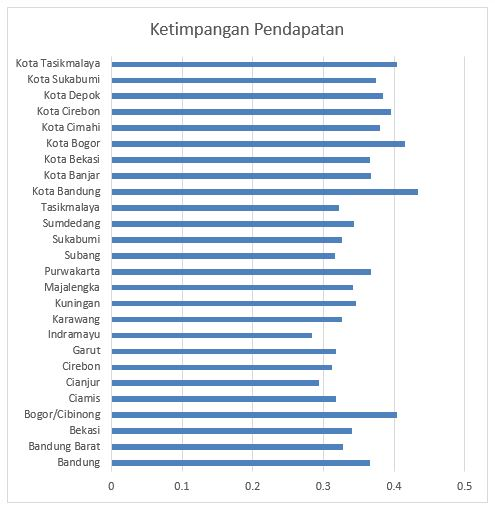

1. Analisis Deskriptif Kasus Korupsi
1.1 Analisis Deskriptif Kasus Korupsi Pertahun
{kind=link}
1.2 Analisis Deskriptif Kasus Korupsi Perkabupaten
{kind=link}
2. Analisis Deskriptif Ketimpangan Pendapatan Masyarakat
2.1 Analisis Deskriptif Ketimpangan Pendapatan Pertahun
{kind=link}
2.2 Analisis Deskriptif Ketimpangan Pendapatan Perkabupaten
{kind=link}
3. Hubungan Ketimpangan Pendapatan Masyarakat Terhadap Korupsi

- Estimasi Model Teknik model regresi data panel yang lebih baik adalah dengan menggunakan Fixed Effect Model
- Uji Parsial Ketimpangan Pendapatan berpengaruh signifikan terhadap Kasus Korupsi
- Persamaan Regresi Y = -0,748714 + 4,540819.(Ketimpangan Pendapatan)
- Uji Goodness of Fit Dalam analisis ini memiliki nilai koefisien determinasi (R2) yang bernilai 0,032159 atau 3,2159%.
4. Hubungan Korupsi Terhadap Ketimpangan Pendapatan Masyarakat

- Estimasi Model Teknik model regresi data panel yang lebih baik adalah dengan menggunakan Fixed Effect Model
- Uji Parsial Kasus Korupsi berpengaruh signifikan terhadap Ketimpangan Pendapatan Masyarakat.
- Persamaan Regresi Y = 0,346876+0,007082.(Kasus Korupsi)
- Uji Goodness of Fit Dalam analisis ini nilai koefisien determinasi (R2) yang bernilai 0,032159 atau 3,2159%.